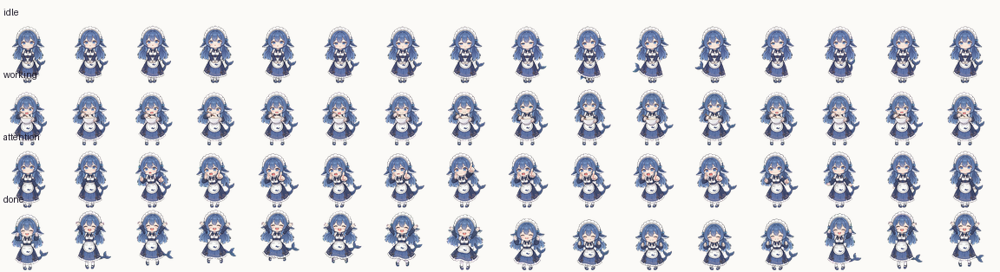

zip 里只有两个文件：pet.json（元数据 + 状态机）和 spritesheet.png（4096×1024 的 64 帧图集）。角色 label 是「大肥鱼」，从配色和轮廓看是 DeepSeek 的蓝色小鲸鱼形象。它不是 logo 素材，而是一套可直接播放的宠物动画图集——正好和 Sidekick 想要的「手机宠物」是同一类东西。
64 帧
256 × 256 px
4.0 MB
schema 2
每行 16 帧，100ms 一帧（working 80ms）。done 是「播一次 + 最后一帧停 1.5 秒」，其它三个循环。下面是按 pet.json 还原的播放效果（GIF 首帧透明底，白底卡片上不好看可忽略）。
默认待机：呼吸、轻微摆动，循环播放。
工作状态：节奏最快，动作幅度最大。
需要你注意：动作幅度大、有明显招手/提示感。
完成庆祝：播一次，最后一帧定格。

| 项 | 结论 | 说明 |
|---|---|---|
| 美术质量 | 可用 | 64 帧全手绘动画、透明背景、每帧都有实际形变（相邻帧差异 2k–21k 像素，不是复制帧凑数）。 |
| 状态设计 | 很贴 | idle / working / attention / done 与 Sidekick AI 联动的四态一一对应，连 done 的「播一次 + 定格」都想到了。 |
| 尺寸 | 偏大 | 4MB PNG → 解码后 4096×1024×4 = 16MB 内存；手机上首屏加载和内存都要掂量。转 WebP + 按状态切 4 张能降到几百 KB。 |
| 渲染成本 | 低 | 100ms/帧 = 10fps，CSS sprite（background-position）或 canvas 都轻松，比 Rive 省事得多。 |
| 格式标准 | 现成 | pet.json 带 grid/states/transitions（task:start / need-approval / completed），是 OpenPets / Codex 的 schema 2，不是野格式。 |
| 授权 / 品牌 | 有风险 | zip 里没有 LICENSE；角色是 DeepSeek 的「大肥鱼」鲸鱼 IP。直接放进 Sidekick 涉及品牌撞车，建议只当格式参考和美术基准。 |
渲染层很小：一个 <SpritePet state="working" /> 组件，背景图按状态行偏移 + steps() 每帧，done 用 animationend 停帧。下面是骨架，不是最终实现：
// 思路：一张图集按行取状态，按列 steps 播放
const ROWS = { idle: 0, working: 1, attention: 2, done: 3 };
const FRAMES = 16;
.sprite {
width: 256px; height: 256px;
background-image: url(/pets/dafeiyu.webp);
background-size: 4096px 1024px; /* 16×256, 4×256 */
background-position-y: calc(var(--row) * -256px);
animation: play 1.6s steps(16) infinite; /* 16 × 100ms */
}
@keyframes play {
to { background-position-x: -4096px; }
}
/* done：animation-iteration-count: 1，结束后停在最后一帧 */需要额外处理的点：① 减少动效时定格在首帧；② 后台/录音时暂停（现有 useReducedMotion / hidden 逻辑可复用）；③ dpr 上限 2，256px 在 2x 屏上够用；④ 图集要先转 WebP 并考虑拆成 4 张按状态懒加载。